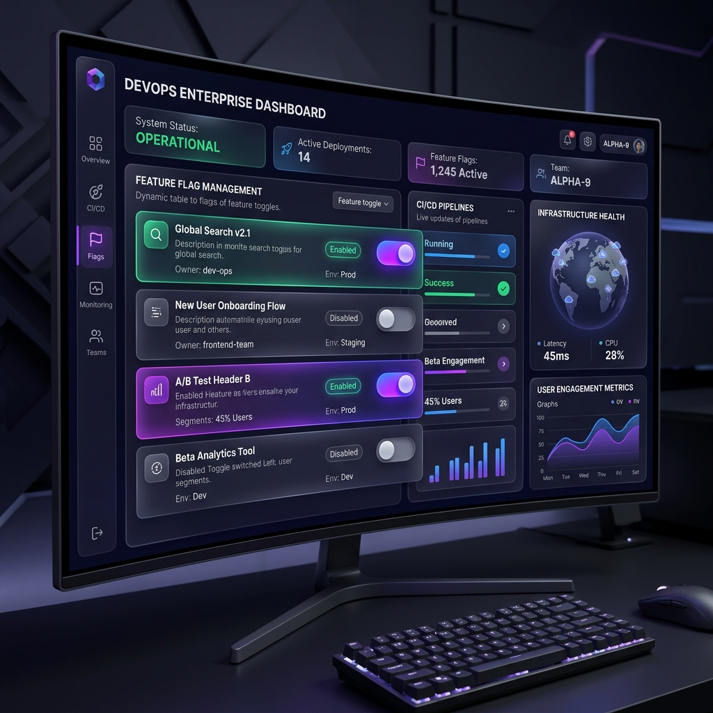
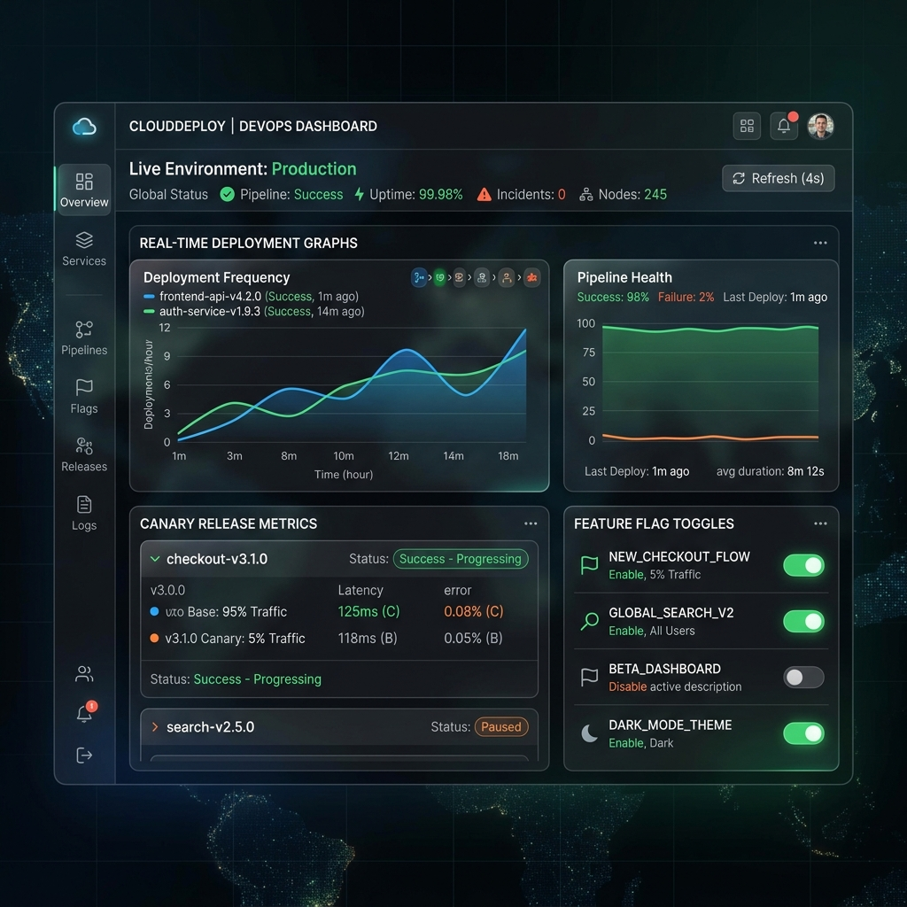
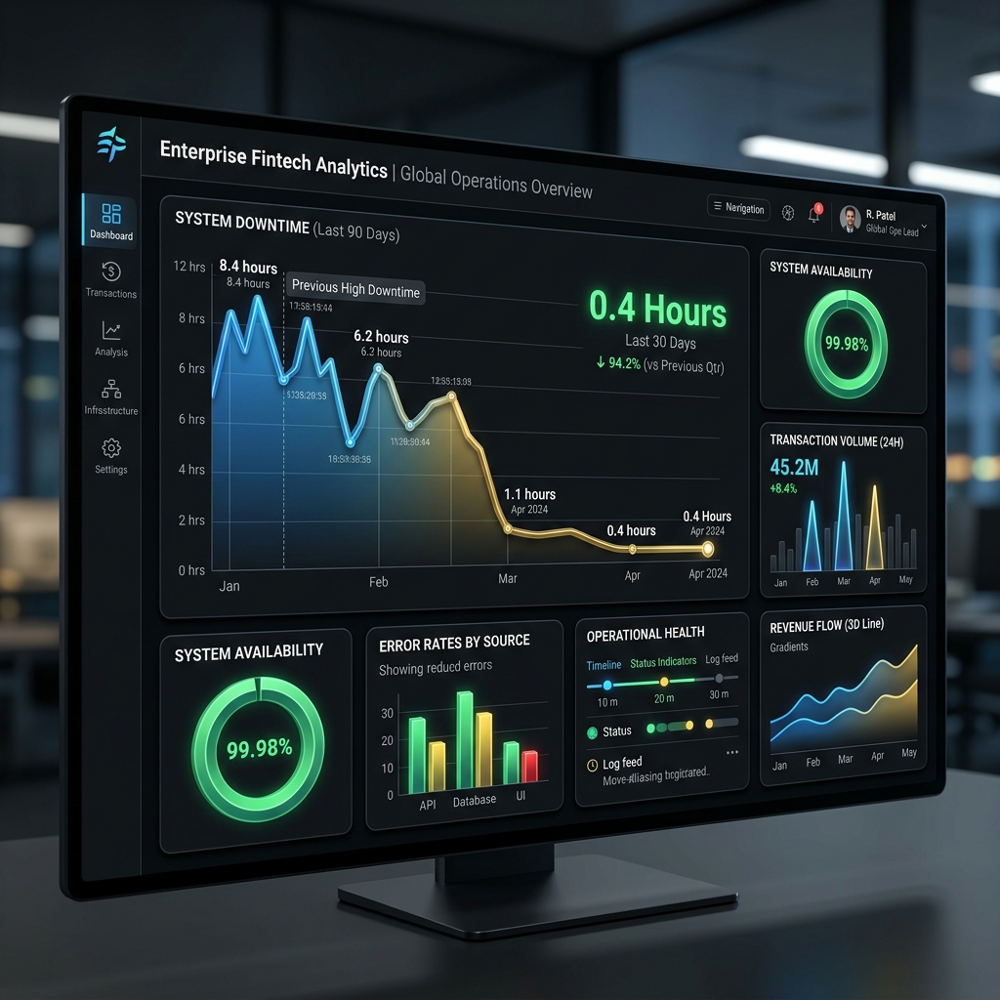

Deploy with Zero Risk.
Toggle with Confidence.
I help enterprise teams decouple deployment from release using advanced feature flag strategies, canary rollouts, and automated kill-switch architectures.


Trusted by 50+ Global Enterprises

Strategic Flag Architectures
Modern release toggling isn't just about 'if' statements. It's about granular control over your deployment lifecycle.
Kill Switches
Instantly disable buggy features in production without a full redeploy.
Gradual Rollouts
Percentage-based delivery to monitor performance before full release.
Canary Releases
Traffic splitting to isolate potential errors in small cohorts.
A/B Testing
Data-driven decisions using server-side experimentation flags.
Eval Latency
Deployment Safety Metrics
We track every toggle. Our monitoring system ensures that even a 1% traffic split is analyzed for latency, errors, and user sentiment.
Error Reduction
Decrease production incidents by 70% with automatic rollbacks and real-time telemetry.
Velocity Boost
Deploy 10x faster by decoupling code merges from feature activation and testing in production.
The Strategy Workflow
A systematic approach to transitioning your enterprise to feature-driven delivery.
Discovery
Audit existing deployment pipelines and identify bottleneck features.
Planning
Design custom flag taxonomies and targeting rules for cohorts.
Rollout
Implement CI/CD integration with automated canary splitters.
Monitoring
Real-time health tracking and automated kill-switch triggers.
Optimization
Flag cleanup, performance tuning, and scaling the system.
Proven Success in High-Traffic Systems
Before Flags
70% Failure Risk
With FlagMasters
3% Failure Risk
MTTR Improved
Active Users

Ready to Scale Your Release Strategy?
Stop deployment anxiety. Start delivering features with surgical precision. Book a 30-minute strategy call today.